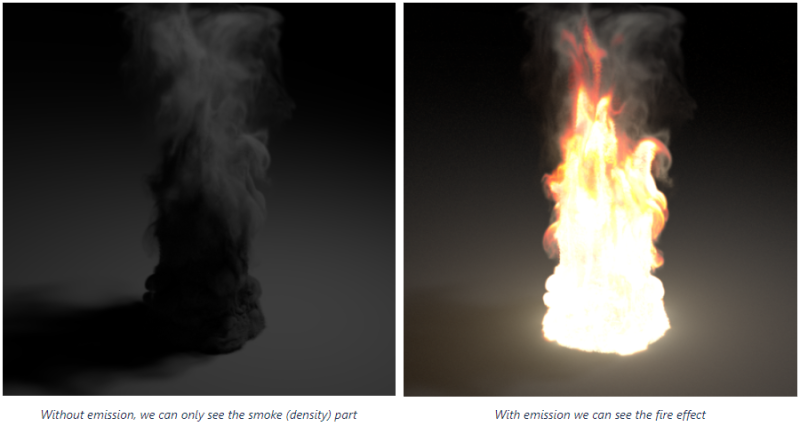

VDB渲染
简单介绍
vdb是一种体积数据类型，梦工厂开发的。
vdb中存储的数据一般叫作 场（field） 或者 通道（channel）
注意：
在C4D中导入体积后，如果channel为空，体积就是有问题的
常用场
不同的场可以理解成图片的RGB通道，记录的是不同信息而已。只不过图片用的二维平面的像素块记录颜色信息。VDB用的是三维空间的立体像素块记录体积信息。
density 密度场 ⭐
体积的厚度，density用于渲染烟雾。
flame 火焰场 temperature 温度场
flame和temperature用于渲染火和爆炸的燃烧区域，正常在渲染的时候更多的会选择flame控制火焰的自发光区域
vel 矢量速度场
主要用于渲染烟雾的运动模糊，一般烟雾不需要渲染motion
烟雾渲染
测试文件:bunny_cloud.vdb
灯光设置
渲染烟雾，需要把灯光的体积照明设置为1
材质
烟雾渲染一般只需要density场，创建redshift的volume材质，在channel中选择density
渲染烟，只需要关注scatter散射 和absorption吸收
- scatter可以理解为漫反射，越大越亮
- absorption可以理解为透明，越大体积越厚
增加scatter系数会使体积更亮。增加absorption系数会使体积更不透明。体积越不透明，穿过它的光就越少。换句话说，高吸收意味着体积变暗。
如果想保持相同的近似强度，建议同时调整scatter系数和absorption系数。也就是说调节时候，同加同减。
Scatter Tint 来调整音量的整体颜色
火焰渲染
测试文件:fire.vdb
灯光同上设置
材质
如果只渲染火，不渲染烟，scatter中的channel空白就行。

控制火焰就只需要把flame或者temperature场添加到Emission自发光的channel中。
scale控制整体亮度，ramp控制颜色过度
- 对于低温，使用黑色/灰色
- 对于中等温度，使用红色
- 对于更高的温度，请使用黄色/白色
小技巧
不管是烟或者火焰在调节材质拉渐变的时候，不过是把一定范围区间的值映射到新的范围
这里拿密度举例：
如图，假如VDB中密度的范围是0-1，就相当于把0-1对应到了紫-蓝，这种情况是最理想的。
注意
在三维制作中，density或者flame场的大小范围不一定刚好都在0-1的区间范围，往往density和flame的最大值会大于1。
这种情况下，就可以在材质Advanced标签中修改下对应场的最大值。
在导出VDB的时候会附带一个csv表格，记录有我们用到的density，flame，temperature场的最大值
- 一般在
densuity remap的old max修改成表里的density最大值X100 Emission remap的old max修改成表里的flame最大值
VDB运动模糊
前提：导出的VDB含有速度场，目前不支持矢量的速度场